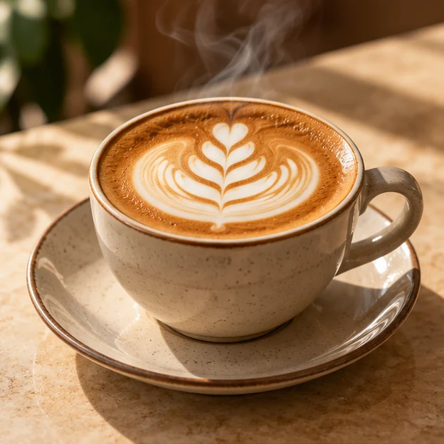
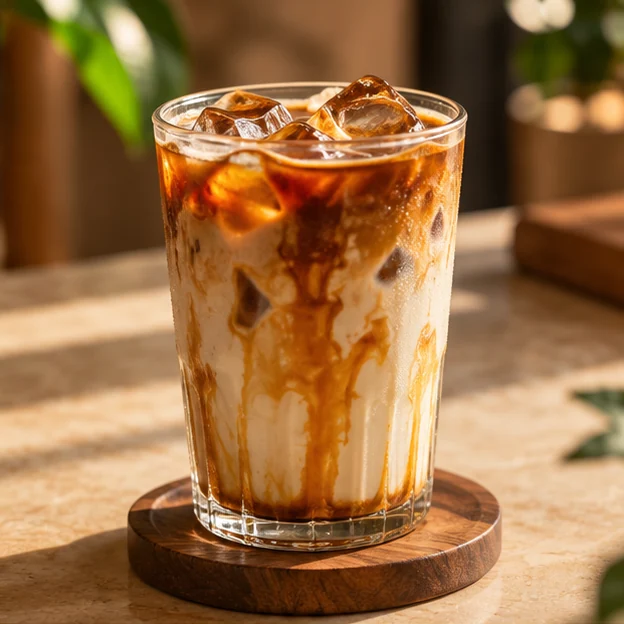
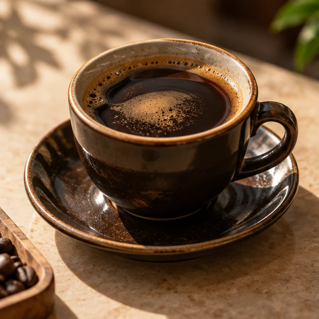
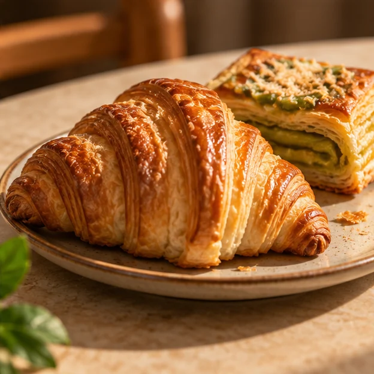
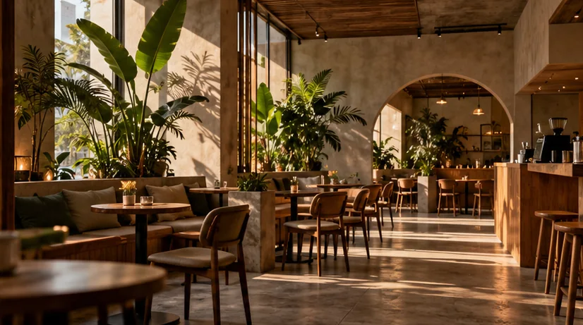
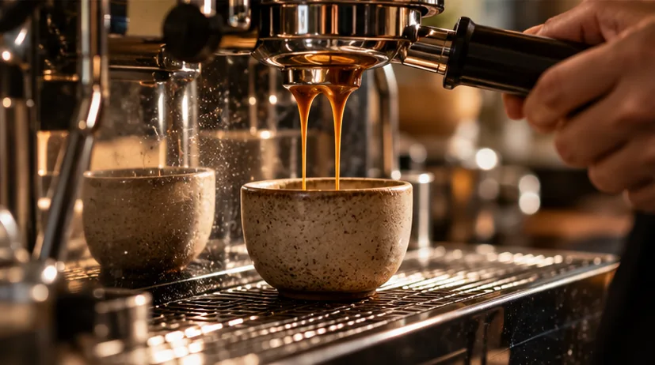

The comfort cup
Caffè Latte
RM 14Espresso and textured milk in a gentle embrace.
A modern Malaysian café concept
Familiar Malaysian flavours, made for all the little moments we share. Good coffee. Better together.

A little coffee. A little pause. A little more kita.
A few good reasons
From classic Malaysian kopi to everyday café favourites. Something for every kind of pause.
View the full menu
The comfort cup
Espresso and textured milk in a gentle embrace.
The afternoon pause
Cool milk and espresso with a mellow finish.

The familiar favourite
Bold local black coffee, lightly sweetened.

The perfect plus-one
Golden, crisp layers with a soft buttery centre.
An imagined menu. Illustrative prices in Malaysian ringgit. No orders or reservations.

The story of kita
kita / kee-tah /
all of us · together
A morning kopi. An afternoon catch-up. A conversation worth staying for.
KopiKita is a fictional love letter to Malaysian coffee culture — familiar flavours, modern pours and a little room for everyone.
An imagined feeling
A little quiet. A little conversation.
The kind of warmth you want to take with you.

An imagined space, inspired by a familiar feeling. All imagery is synthetic.